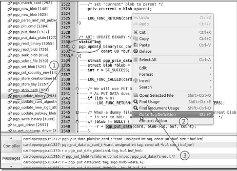
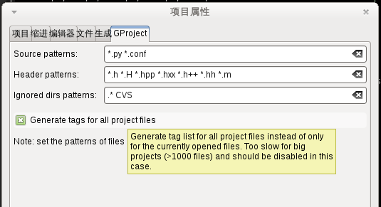
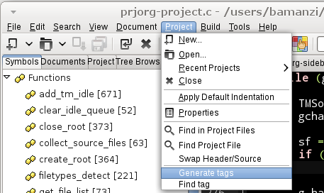
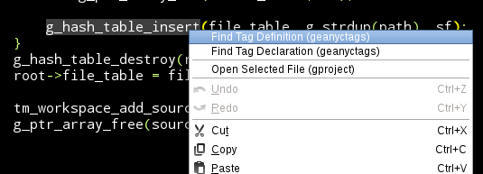
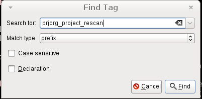

Geany的"跳转到标记定义“功能如何使用

Geany是个比较轻量级的代码编辑器，在一些不怎么需要编辑的代码上，我比较常用它来浏览代码。不过它的 跳转到标记定义(Go to tag definition) 功能有点奇怪，一开始死活不知道怎么用，所以值得拿出来说一下。
问题
其实Geany内置了分析代码文件的能力（记得是移植了ctags的代码进来），当打开代码文件的时候，能够分析文件中的tags（包括类、函数和变量）并在 标记(Symbols) 侧边栏列出来， 也能够在文件内或者已经打开的文件间进行跳转(go to tag definition)，但不能跳转到未打开的文件 —— Geany称这类tags为workspace tags

P.S. Geany还有一类Global tags，按不同编程语言提供（比如 /usr/share/geany/php.tags， /usr/share/geany/python.tags，另外网站上还提供了一些额外的tags包），文件内容里不包含符号来源信息，所以只能用于自动补全和显示calltip，跟"跳转到标记定义"功能无关）。
解决方法
如何能够实现跳转到未打开的文件呢？在网上搜到如下信息:
This feature (navigating through the source code) has limitations when used alone in Geany. It can only look for definitions in the files being opened. So, to enable it to look for definitions in other closed files in the same folder, you must use this feature inside a certain project created by Geany's built-in Project feature, with the File patterns defined, and combine it with other project plugins that support Generate file list on load.
-- Top Geany features you need to know about
简单地说，方法是: 得定义工程，并启用GProject插件，在工程配置里配置好 source files 文件名匹配模式（比如*.cpp *.c *.h）并勾选上GProject页面的Generate tags for all project files。然后就可以使用了。

解决方法2: 新插件GeanyCtags
虽然用上面的方法已经可以跳转了，但有几个缺点:
- tags是每次打开工程时动态分析得到的，如果工程比较小（比如只有100个左右的文件）的话，速度还行，但如果工程比较大就悲剧了
- 由于tags的分析完全是geany自己在玩，用户就没法用ctags的一些配置参数选项来调整或者改进了
于是，在今年年初，Geany开发组就单独做了一个GeanyCtags插件。不过没想到快半年过去了，Geany还是没发布一个新版本，所以要用的朋友就只能自己编译。
安装方法
推荐用Geany自带的 waf 来编译（至少在Windows下只能用这个。虽然 http://www.geany.org/Support/BuildingOnWin32 这里说的是用 mingw32-make -f makefile.win32， 但 geany-plugins 的daily snapshot 包并没有提供 makefile.win32）:
wget -c http://download.geany.org/geany_plugins_git.tar.gz
tar zxf geany_plugins_git.tar.gz
cd geany_plugins_git
./waf configure --enable-plugins=geanyctags,automark
./waf build
sudo make install然后在Geany的插件管理里面启用 GeanyCtags 插件就可以了。
P.S. 一个好消息是， 这个插件可以在Geany 1.24下编译成功，这样你可以在Geany 1.24里面使用 。但其它一些新插件不一定能行，因为可能用到了Geany主程序的新变动，比如
ProjectOrganizer插件。
使用方法
0.. 当然，首先得安装Exuberant Ctags
1.. 在项目属性中确保 File patterns 已经设置（比如设为 *.rb *.rake)
2.. 点击菜单 Project -> Generate tags 生成tags文件，Geany会在底部的信息栏显示生成tags文件的命令和结果

3.. 在符号（函数名、变量名）上点击右键，可以看到顶部新增了两个菜单项目: Find Tag Definition (GeanyCtags) 和 Find Tag Declartion (GeanyCtags)

4.. 主菜单里面的 Project -> Find tag 可以用来跳转到任意tag，自己输入就是了

补充说明
- GeanyCtags生成Tags文件时会在信息栏显示生成tags文件的命令和结果:
find . -not -path '/.' ( -name ".c" -o -name ".h" ) | ctags --totals --fields=fKsSt --extra=-fq --c-kinds=+p --sort=foldcase --excmd=number -L - -f /users/bamanzi/farm/geany_plugins_git/geany_plugins.tags (in directory: /users/bamanzi/farm/geany_plugins_git)
409 files, 117412 lines (3410 kB) scanned in 0.2 seconds (17947 kB/s)
10250 tags added to tag file
10250 tags sorted in 0.01 seconds
- 从上面的信息可以看出，生成的tags文件跟工程文件在同一个目录，不过文件名并不是
tags，而是prjname.tags。 - 从上面的信息可以看出，tags文件是调用ctags命令生成的，所以格式上是标准的ctags输出。如果你有特殊的配置选项（比如需要增加对vbs的支持），你知道怎么下手了吧


昵称：
不改了 退出登录
[Ctrl+Enter快捷键提交]
【链接】融云阿里云大咖面对面 ：教你玩转直播风口
【推荐】报表开发有捷径：快速设计轻松集成，数据可视化和交互
【推荐】一个月仅用630元赚取15000元，学会投资
【推荐】阿里舆情首次开放，69元限量秒杀
· 饿了么有菜或因扩张太快裁员瘦身 被指三成订单是刷出来的
· 首家“互联网金融”咖啡店倒闭：未撑过一年
· 滴滴之后 刘翔又把极路由告了
· LOL起诉外挂团队：每月超6700万玩家受害
· 小米吹的天花乱坠，到底用的是什么材料？
» 更多新闻...
· 可是姑娘，你为什么要编程呢？
· 知其所以然（以算法学习为例）
· 如何给变量取个简短且无歧义的名字
· 编程的智慧